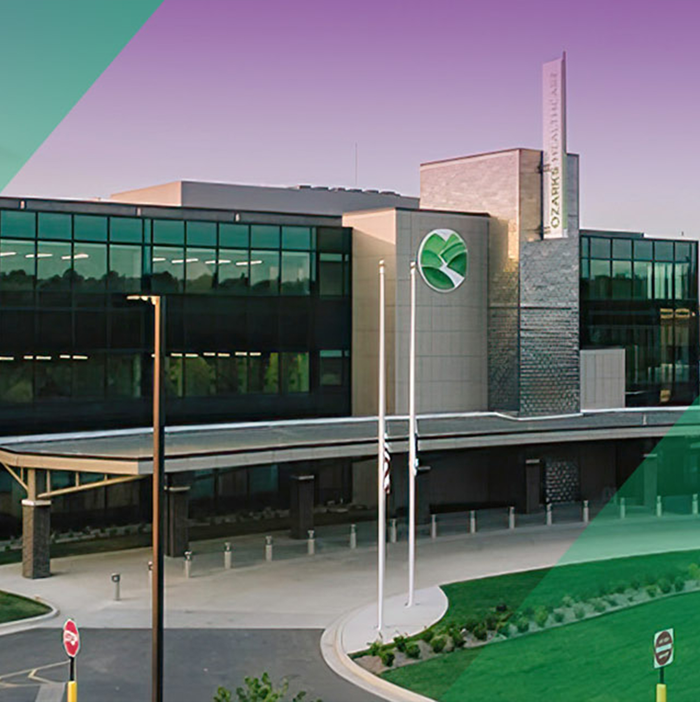
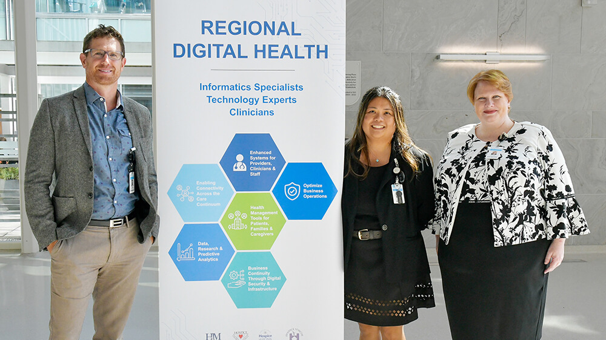
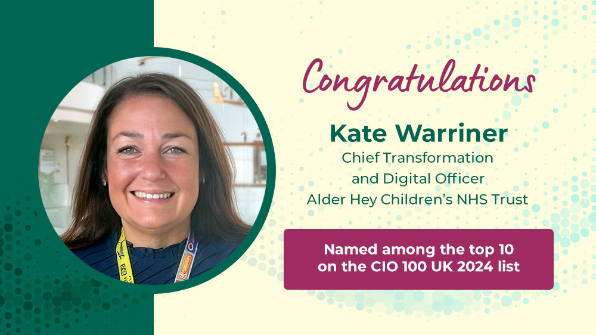
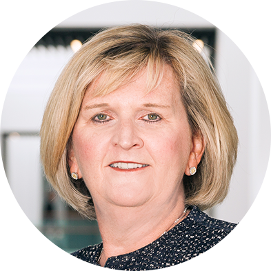

Customer Awards
Connection, partnership, success. Achieving results, together.
A partnership with MEDITECH can open up new possibilities for your organization. Working together, we can make sure that our solutions address your unique needs.
See how a shared mission and trust in your EHR vendor can lead to great results.
Ozarks Healthcare earns two EHR Experience Breakthrough Awards at KLAS Arch Collaborative Summit
Ozarks Healthcare (West Plains, MO) was recently awarded two KLAS Arch Collaborative EHR Experience Breakthrough awards for physician and nurse EHR satisfaction improvements, during the organization’s annual learning summit. These new awards recognize participants who have improved their net EHR experience by 15 points or more between survey measurements.
“We’re a 114-bed rural hospital. These results show that it doesn't matter your organization's size or budget. If you follow the guidelines, look at the data, and listen, you can make a difference.”
EZ Niles
Executive Director of IT
Ozarks Healthcare

Dr. Priscilla Frase wins multiple industry awards
Priscilla A. Frase, MD, hospitalist and CMIO at MEDITECH customer Ozarks Healthcare was recognized as Innovator of the Year 2024 at CHIME’s recent Fall Forum. It’s the latest in a series of recent honors for the rural healthcare executive, who was also recognized with the HIMSS Senior Executive Changemaker in Health Award for 2024.
“I wasn’t expecting this level of improvement from measurement to measurement. I didn’t think an organization like ours could ever be in the 100th percentile. It speaks to our IT team's commitment, passion, and innovation for doing everything possible to make life easier for our staff. I also can’t thank KLAS enough for helping us improve the lives of our physicians and our patients.”
Dr. Priscilla Frase
CMIO
Ozarks Healthcare
“It’s an honor for us to receive this certification. Health equity has always been at the heart of everything we do. But this achievement was very important for us to reaffirm our commitment to diversity and inclusion, and to let our community know that we are prepared to evolve to meet their needs.”
Daisy Rodriguez
Chief Operating Officer
Humboldt Park Health
Ensuring care for everyone
Humboldt Park Health becomes first Midwest hospital to achieve Healthcare Equity Certification from the Joint Commission
Humboldt Park Health (Chicago, IL) recently became the 13th facility in the U.S. — and the first in the Midwest — to achieve Healthcare Equity Certification from The Joint Commission. As a safety net hospital which serves large Hispanic/Latinx and African-American populations, Humboldt Park Health’s use of the Expanse EHR played a key role in healthcare equity strategy and its certification journey to quantify where patient needs existed, and measure what impact their programs had on improving community health.
Working together with HCA
As a longstanding partner with MEDITECH, HCA continues to take on enterprise-wide digital transformation with Expanse, including a collaboration with Google Cloud to bring generative AI to hospitals. HCA ranked No. 1 on Fortune’s list of 2024 Most Admired Companies in the medical facility category.
"Our EHR is designed to be a more collaborative ecosystem, not just a one-size-fits-all EHR. MEDITECH works with us and with Google to determine how we can bring the best technology and insights into the platform."
Michael Schlosser, MD
SVP of Care Transformation & Innovation
HCA Healthcare
"Hospitals could have avoided over 97,000 patient safety events between 2020 and 2022 if they all performed similarly to the 2024 Patient Safety Excellence Award winners."
Healthgrades Patient Safety Excellence Award™ Analysis
Healthgrades recognizes outstanding achievements in patient care
Healthgrades’ 2024 Patient Safety Excellence Awards™ recognized 444 hospitals that have the lowest occurrences of 14 preventable patient safety events. These hospitals are in the top 10% in the nation for patient safety.
- Over 100 of this year's Patient Safety Excellence award recipients are MEDITECH customers, with roughly 95% of them having been with MEDITECH for 10+ years.
- Nearly 50% of the MEDITECH customers recognized have made the list 4 years in a row and also received other Healthgrades' Awards this year.
Elevating community care
MEDITECH Expanse helps healthcare systems of various sizes serve their patient populations in rural and suburban communities. The healthcare industry continues to recognize MEDITECH customers by honoring them as great community hospitals.
- Augusta Health was recently recognized with two health equity awards for its unwavering commitment to reducing disparities in care. The independent community care health system was one of two U.S. healthcare organizations honored by the Centers for Medicare and Medicaid Services (CMS) with the Health Equity Award and one of three hospitals and health systems nationwide to receive the American Hospital Association’s (AHA) 2024 Carolyn Boone Lewis Equity of Care (EOC) Award.
- Several MEDITECH customers were recently named by Becker’s Healthcare as Community Hospital CEOs to Know as part of the publication’s annual list program. The executives were selected for their efforts to provide strategic oversight and “high-quality, low-cost care to patients in the communities they serve.”
- Congratulations to all MEDITECH customers named as Chartis Group top 100 rural and Community Hospitals and Critical Access Hospitals. Many MEDITECH customers recognized, such as Howard County Medical Center, have been with MEDITECH for over 10 years and several have made the top 100 list for 5 years in a row.
Across the globe, MEDITECH customers have a rich history of leading the way in delivering the highest quality healthcare
NHS Trusts using MEDITECH’s EPR receive top scores on Digital Maturity Assessment
MEDITECH customers are standing out according to a report published by Digital Health Intelligence. The report, which examines Digital Maturity Assessment (DMA) scores of NHS trusts and Integrated Care Systems across England, reveals that three out of the five top scores for digital maturity belong to sites using MEDITECH’s EPR.

CARE4 hospital partnership in Ontario achieves HIMSS Stage 6 recognition
Four acute hospitals comprising the CARE4 partnership in Central Ontario were recently awarded the prestigious Electronic Medical Record Adoption Model (EMRAM) Stage 6 validation from the Healthcare Information and Management Systems Society (HIMSS), recognizing their use of digital technology to advance data exchange and interoperability for improved patient engagement and clinical efficiencies.

Kate Warriner named among the top ten on CIO 100 UK 2024 list
Chief Transformation and Digital Officer Kate Warriner of the Alder Hey Children’s NHS Trust was recently named one of the UK’s top ten IT leaders by the CIO 100. This makes her the highest-ranked CIO within the NHS and the only woman in the top 10.
Learn more about MEDITECH customers leading in innovation

"Our customers are progressive leaders that have made a point of embracing advanced technologies to open up new possibilities for transformational change across their organizations. It's been an honor partnering with them as they continue to show the benefits a modern EHR can bring to their communities."
Helen Waters
CHIME Foundation Board Member
MEDITECH Executive Vice President and Chief Operating Officer
Join our community of customer leaders and share your story with us.